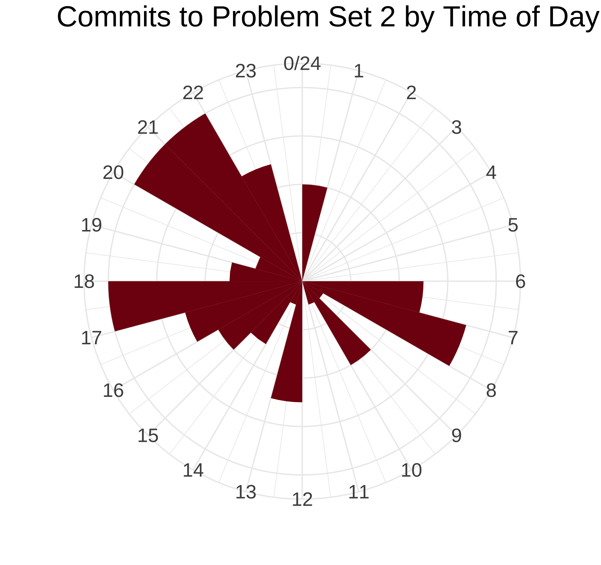
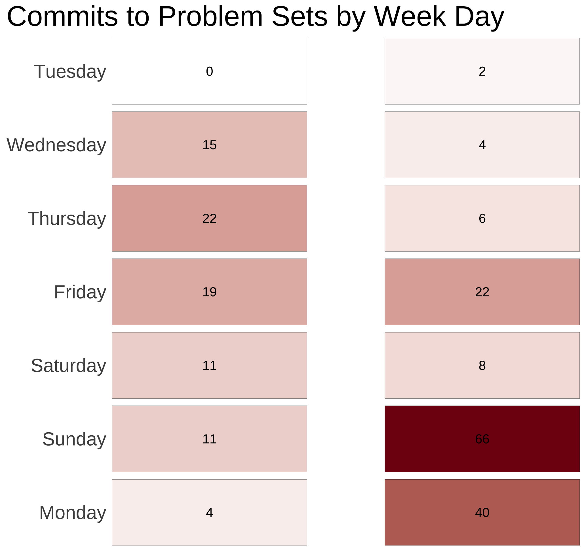
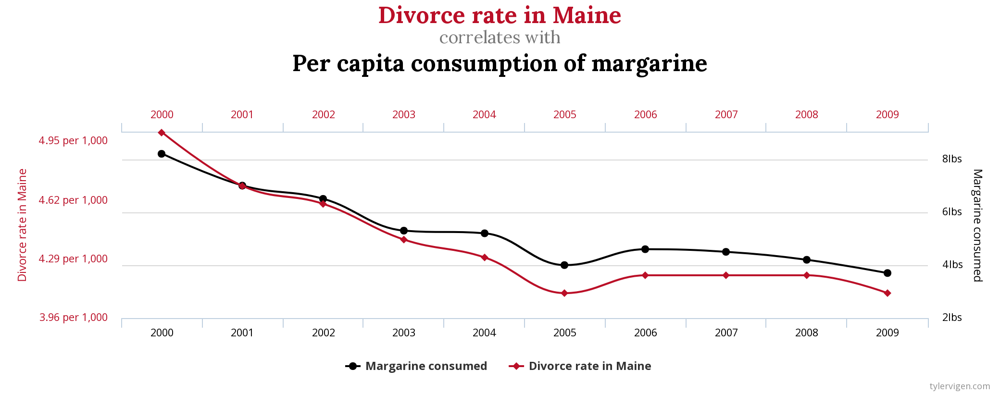

04:00
Describing Relationships
Data Analytics and Visualization with R
Session 3
Warm up
Housekeeping: Homework
- Push your latest version of the project to GitHub
- Slack me/write on GitHub Discussion
- Include the lines of code which produce the error and the error text when asking for help
- Deadline for Problem Set 3: Monday 23:59 (not noon)
- Office hours Monday 16:00-17:00 (and Friday)
Your GitHub Stats 🤓


Quiz: Which of these statements are correct?
The mean and mode of the variable always have to be present in the data.
When estimating variance of the distribution, observations further from the mean have more weight than observations close to the mean.
Boxplot contains the information about the distributions’ measures of center, spread, and shape.
Median and IQR are more robust to outliers than mean and standard deviation.
Proportion is the mean of a binary variable.
Anatomy of a Boxplot

Will these two graphs look different?
Plot A
ggplot(
data = governors,
mapping = aes(
x = year,
y = lived_after
)
)
+
geom_point(alpha = 0.5)Plot B
ggplot() +
geom_point(
governors,
aes(
x = year,
y = lived_after
),
alpha = 0.5
)Today
- Last week: describing variables by themselves
- Today: how variables can be related to each other
- Measuring association
- Visualizing bivariate relationships
- Lab: data viz + data wrangling
What is Statistics?
Use a sample to make inferences about a population

Terminology
- Estimand: the true value of the parameter in the population (unknown)
- Estimate: a value which is our best guess about a parameter based on our sample
- Estimator: the function (procedure) we apply to get the estimate

Notation
Greek
Letters like \(\beta_1\) are the truth/estimands, aka population parameters
Letters with extra markings like \(\hat{\beta_1}\) are our estimate of the truth based on our sample
Latin
Letters like \(X\) are actual data from our sample
Letters with extra markings like \(\bar{X}\) are calculations from our sample
Estimating the Truth
(Sample) Data → Calculation → Estimate → Truth
| Data | \(X\) |
| Calculation | \(\bar{X} = \frac{\sum{X}}{N}\) |
| Estimate | \(\hat{\mu}\) |
| Truth | \(\mu\) |
\[ \bar{X} = \hat{\mu} \]
\[ X \rightarrow \bar{X} \rightarrow \hat{\mu} \xrightarrow{\text{🤞 hopefully 🤞}} \mu \]
Conditional (Marginal) Distributions
A conditional distribution is the distribution of one variable given the value of another variable

Conditional Means
- Summarizes conditional distributions
- Conditional expectation \(E[Y|X]\):
- Expected (typical/average) \(Y\), given the value of \(X\)
- Independence (no relationship) \(E[Y|X] = E[Y]\):
- “Knowing \(X\) doesn’t affect my expectation of \(Y\)”
- Learning about \(X\) does not help us to predict \(Y\)
- Our best guess remains the typical value of \(Y\)
| treatment | att_start_mn | att_end_mn |
|---|---|---|
| Control | 8.859375 | 8.453125 |
| Treated | 9.607843 | 10.000000 |
Does Time of Day Help Predict Happiness?
cookies_data# A tibble: 10 × 3
happiness cookies time
<dbl> <int> <chr>
1 0.5 1 Morning
2 2 2 Morning
3 1 3 Morning
4 2.5 4 Morning
5 3 5 Morning
6 1.5 6 Afternoon
7 2 7 Afternoon
8 2.5 8 Afternoon
9 2 9 Afternoon
10 3 10 Afternooncookies_data %>%
group_by(time) %>%
summarise_all(mean)# A tibble: 2 × 3
time happiness cookies
<chr> <dbl> <dbl>
1 Afternoon 2.2 8
2 Morning 1.8 3Relationships
Which of These Statements Describe Correlations?
03:00
- Voters who donate money to political candidates are usually wealthy.
- Cities with more crime tend to hire more police officers.
- Female legislators on average speak more emotionally about women-related issues as compared to male parliamentarians.
- Most candidate who win political office received a lot of campaign donations.
Measuring Association
Covariance
\[Cov(X,Y) = \frac{\overbrace{\sum^N_{i = 1}\overbrace{(X_i - \bar{x})}^{\text{Deviation of }X_i\\\text{from mean of X}} \times\overbrace{(Y_i-\bar{y})}^{\text{Deviation of }Y_i\\\text{from mean of Y}}}^{\text{Sum of the product of the deviations}\\\text{across all observations}}}{\underbrace{N}_{\text{Number of observations}}}\]
- conveys information about co-occurrence of the values in variables
- positive values indicate direct relationship (positive correlation)
- negative values indicate inverse relationship (negative correlation)
Covariance: Example
x <- c(4, 13, 19, 25, 29, 10, 30)
y <- c(10, 12, 28, 32, 38, 35, 11)
data <- data.frame(x, y)
knitr::kable(data)| x | y |
|---|---|
| 4 | 10 |
| 13 | 12 |
| 19 | 28 |
| 25 | 32 |
| 29 | 38 |
| 10 | 35 |
| 30 | 11 |
data %>%
summarise_all(mean) x y
1 18.57143 23.71429cov(x, y)[1] 37.85714Covariance: Illustration

Warning in is.na(x): is.na() applied to non-(list or vector) of
type 'expression'
Warning in is.na(x): is.na() applied to non-(list or vector) of
type 'expression'
Warning in is.na(x): is.na() applied to non-(list or vector) of
type 'expression'
Warning in is.na(x): is.na() applied to non-(list or vector) of
type 'expression'
Warning in is.na(x): is.na() applied to non-(list or vector) of
type 'expression'
Warning in is.na(x): is.na() applied to non-(list or vector) of
type 'expression'
Warning in is.na(x): is.na() applied to non-(list or vector) of
type 'expression'
Warning in is.na(x): is.na() applied to non-(list or vector) of
type 'expression'
Warning in is.na(x): is.na() applied to non-(list or vector) of
type 'expression'
Warning in annotate("segment", x = 16, y = 27, xend = 25, yend =
15, arrow = grid::arrow(angle = 20), : Ignoring unknown
parameters: `family`Warning in is.na(x): is.na() applied to non-(list or vector) of
type 'expression'
Warning in is.na(x): is.na() applied to non-(list or vector) of
type 'expression'
Warning in annotate("segment", x = 16, y = 27, xend = 25, yend =
15, arrow = grid::arrow(angle = 20), : Ignoring unknown
parameters: `family`Warning in annotate("segment", x = 11, y = 17, xend = 22, yend =
26.71429, : Ignoring unknown parameters: `family`Warning in is.na(x): is.na() applied to non-(list or vector) of
type 'expression'
Warning in is.na(x): is.na() applied to non-(list or vector) of
type 'expression'
Correlation Coefficient
\[corr(X,Y)=\frac{Cov(X,Y)}{\underbrace{\sigma_X}_{\text{Standard }\\\text{Deviation }\\\text{of X}}\underbrace{\sigma_Y}_{\text{Standard}\\\text{Deviation}\\\text{of Y}}}\]
- rescaled covariance to \(corr(X,Y) \in [-1,1]\): extreme values indicate stronger relationship
- sometimes denoted by letter \(r\)
- says nothing about how much \(Y\) changes when \(X\) changes
- has no units and will not be affected by a linear change in the units (e.g., going from centimeters to inches)
Correlation Values
| r | Rough meaning |
|---|---|
| ±0.1–0.3 | Modest |
| ±0.3–0.5 | Moderate |
| ±0.5–0.8 | Strong |
| ±0.8–0.9 | Very strong |

Correlograms
Heatmaps

Points

Slope of the Regression Line
\[\beta_X = \frac{Cov(X,Y)}{\underbrace{\sigma_X}_{\text{Standard }\\\text{Deviation }\\\text{of X}}}\]
How much \(Y\) changes, on average, as \(X\) increases by one unit
Regression Line as Conditional Mean
Cookies and Happiness (again)

Goal: Draw a line that approximates the relationship
Prediction Ignoring Number of Cookies Eaten

Fitting the Line Through Every Observation

LOESS Curve

OLS Regression Line

Regression Line Explains Variance in Y with X
Warning: Using `size` aesthetic for lines was deprecated in ggplot2
3.4.0.
ℹ Please use `linewidth` instead.
Explained vs. Unexplained Variance
Warning: Use of `cookies_fitted$happiness` is discouraged.
ℹ Use `happiness` instead.Warning in is.na(x): is.na() applied to non-(list or vector) of
type 'expression'
Warning: Use of `cookies_fitted$happiness` is discouraged.
ℹ Use `happiness` instead.
Use of `cookies_fitted$happiness` is discouraged.
ℹ Use `happiness` instead.Warning in is.na(x): is.na() applied to non-(list or vector) of
type 'expression'
Warning: Use of `cookies_fitted$happiness` is discouraged.
ℹ Use `happiness` instead.
Use of `cookies_fitted$happiness` is discouraged.
ℹ Use `happiness` instead.
Use of `cookies_fitted$happiness` is discouraged.
ℹ Use `happiness` instead.Warning in is.na(x): is.na() applied to non-(list or vector) of
type 'expression'
Visualizing Relationships
The Dangers of Dual y-axes

The Problem: Too Much Freedom
- We have to choose where the y-axes start and stop
- We can force the two trends to line up however we want
Example from The Economist

Fine When They Measure the Same Thing

Adding a second scale in ggplot2
`geom_smooth()` using method = 'loess' and formula = 'y ~ x'
ggplot(
weather,
aes(x = datetime, y = tempmax)
) +
geom_line() +
geom_smooth() +
scale_y_continuous(
sec.axis =
sec_axis(
trans = ~ (. * 9 / 5) + 32,
name = "Fahrenheit"
)
) +
labs(
x = NULL, y = "Celsius",
title = "Daily high temperatures in Mannheim",
subtitle = "January 1 2021–December 31, 2021",
caption = "Source: visualcrossing.com"
)`geom_smooth()` using method = 'loess' and formula = 'y ~ x'Adding a second scale in ggplot2

gov# A tibble: 3 × 2
party total
<chr> <int>
1 Democrat 557
2 Republican 527
3 Third party 8gov <- governors %>%
group_by(party) %>%
summarize(total = n())
ggplot(
gov,
aes(
x = party, y = total,
fill = party
)
) +
geom_col() +
scale_y_continuous(
sec.axis = sec_axis(
trans = ~ . / sum(gov$total),
labels = scales::percent
)
) +
guides(fill = "none") +
scale_fill_viridis_d()Alternative: Use Multiple Plots
`geom_smooth()` using method = 'loess' and formula = 'y ~ x'
`geom_smooth()` using method = 'loess' and formula = 'y ~ x'
library(patchwork)
temp_plot <- ggplot(
weather,
aes(x = datetime, y = tempmax)
) +
geom_line() +
geom_smooth() +
labs(
x = NULL,
y = "Temperature (ºC)"
)
humid_plot <- ggplot(
weather,
aes(x = datetime, y = humidity)
) +
geom_line() +
geom_smooth() +
labs(
x = NULL,
y = "Humidity (%)"
)
temp_plot + humid_plot +
plot_layout(
ncol = 1,
heights = c(0.7, 0.3)
)`geom_smooth()` using method = 'loess' and formula = 'y ~ x'
`geom_smooth()` using method = 'loess' and formula = 'y ~ x'To-Do List
- Problem Set 3 (Visualization and Data Wrangling)
- Readings/videos for week 4 (Intro to Causality)